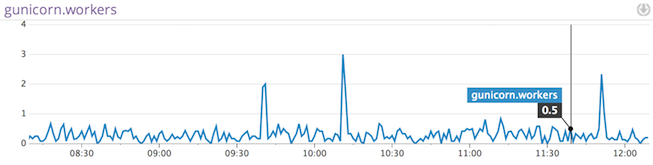

HDFS NameNode
HDFS is a Java-based file system that provides scalable and reliable data storage, and it was designed to span large clusters of commodity servers
HDFS NameNode
Capture HDFS metrics from the NameNode in realtime to:

Install the Datadog Agent on the HDFS NameNode
conf.d/%s.yaml' % agent_name)}
init_config:
instances:
#
# The HDFS NameNode check retrieves metrics from the HDFS NameNode's JMX
# interface. This check must be installed on the NameNode. The HDFS
# NameNode JMX URI is composed of the NameNode's hostname and port.
#
# The hostname and port can be found in the hdfs-site.xml conf file under
# the property dfs.http.address or dfs.namenode.http-address
#
- hdfs_namenode_jmx_uri: http://localhost:50070
Checks
======
[...]
hdfs_namenode
-------------
- instance #0 [OK]
- Collected 21 metrics, 0 events & 2 service checks